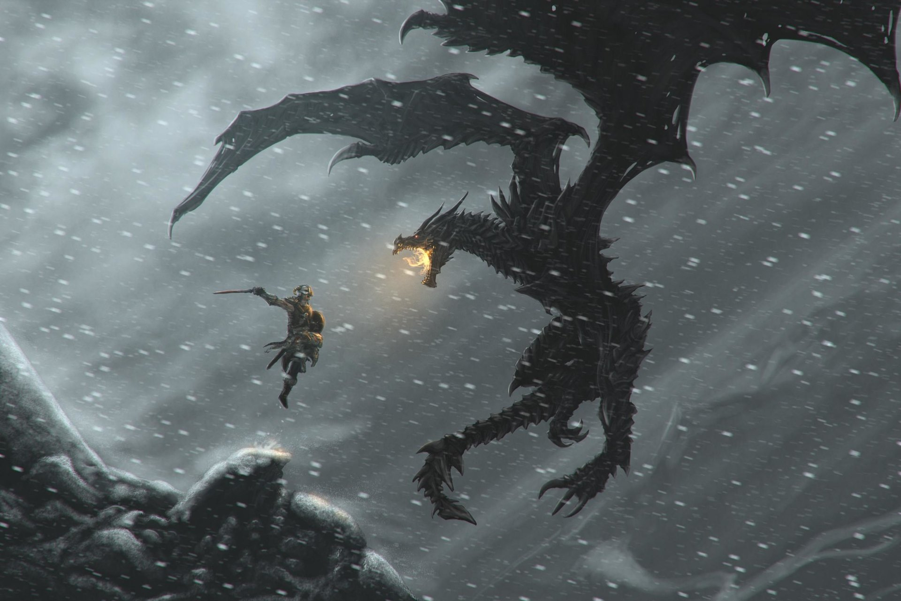

Historia
Skyrim tiene lugar doscientos años después de lo ocurrido en Oblivion. El juego se asienta en los terrenos de la provincia de Skyrim, que se encuentra en plena guerra civil fratricida entre dos facciones enfrentadas política y militarmente: «Los capas de la tormenta» que agrupa a la raza «nórdica» autóctona de Skyrim de un lado, y del otro «El Imperio de Cyrodiil». La historia se inicia en plena guerra civil, entre los que apoyan la independencia del imperio y los que apoyan al imperio. El jugador está preso y está siendo conducido a la ciudad fortificada de Helgen a una ejecución «Imperial». Al llegar a Helgen, pese a no haber sido identificado y a no constar en la lista de candidatos a ejecución, los imperiales deciden ejecutar al jugador. Inesperadamente, un dragón, que resultará ser el antagonista del juego, Alduin, irrumpe cuando el jugador estaría a punto de morir, deteniendo las ejecuciones, ataca y destruye el poblado. A partir de aquí el jugador tiene libre control de su personaje, y descubrirá que su destino esta enlazado al ataque de la bestia y su misión será destruirlo para evitar el regreso de los dragones.


Facciones
Las facciones son organizaciones de personajes que poseen un objetivo en común. El jugador es capaz de entrar en alguna de estas para cumplir misiones, entregada por algún miembro de mayor rango en la facción. Cada una de estas organizaciones posee una sede y un líder.